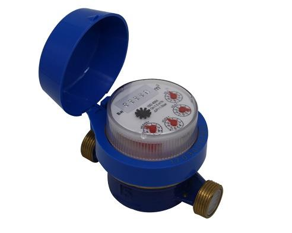

E-mail:
info@sh-meters.comCall Us:
+86 13131984716Main Classification of Cold Water Meters
According to different installation methods, it can be divided into horizontal chilled water meter and vertical chilled water meter.
According to the different structure of wing wheel, it can be divided into screw-wing cold water meter and rotary-wing cold water meter.
According to the immersion way of counting machine parts, it can be divided into dry water meter and wet water meter.
Key Points for Selection of Cold Water Meter
1. The selection of water meter should first consider the working environment of water meter, such as water temperature, working pressure, working time, measuring range and water quality, and then determine the caliber of water meter according to the designed flow through the water meter to produce pressure loss of water meter close to or not exceeding the prescribed value.
In general, when the nominal diameter is not greater than DN50, the rotor type water meter should be used; when the nominal diameter is greater than DN50, the screw type water meter should be used; when the flow rate of the water meter varies greatly, the double type water meter should be used.
2. Water meters whose nominal diameter is not greater than DN50 should be selected according to the second flow rate of water supply system design.
3. Dry water meters should be preferred. In the non-heating areas stipulated by the state, and the minimum limit temperature is below - 4 C, the household water meter in the indoor public part or the water meter adjacent to the outer walls on both sides of the northwest should adopt the dry water meter. If wet water meter is used, heat preservation should be done.
